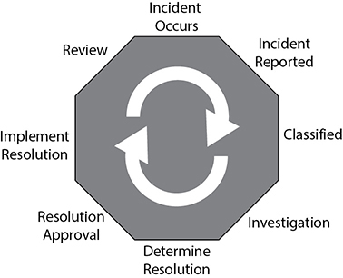

CHAPTER 6
Cloud Security Operations
This chapter covers the following topics in Domain 5:
• The planning and design processes for a cloud data center
• How to implement, run, and manage both the physical and logical aspects of a data center
• How to secure and harden servers, networks, and storage systems
• How to develop and implement baselines
• ITIL service components to manage and comply with regulations
• Managing communications with relevant parties
• How to secure and collect digital evidence from a cloud environment
The operations domain is focused on how to plan, design, run, manage, and operate both the logical and physical components of a cloud data center. We focus on the key components of each layer, including servers, network devices, and storage systems, as well as what makes them unique to a cloud data center versus a traditional data center. We also investigate the collection of forensic evidence, along with the unique challenges and considerations that a cloud environment entails.
Support the Planning Process for the Data Center Design
While a traditional data center and a cloud data center share many similarities, there are many aspects and realities of cloud computing and the way cloud services are used and deployed that will drive considerations for data center design as well. Whereas a traditional data center design often focuses on the infrastructure to support cages and whatever hardware configurations customers will ultimately opt to deploy, a cloud data center must take into account the types of cloud models that will be offered, the potential targeted customers for the cloud environment, regulatory controls, and jurisdictions. A cloud provider will need to decide from the early planning stages which types of regulatory requirements or types of data classification it will focus on or be willing to host, as those decisions will have an impact on many of the physical and logical designs of its data centers.
Logical Design
The logical design area is what contains the most profound differences between a traditional data center and a cloud data center. Many of the key aspects of cloud computing will drive key data center design decisions, both with the design of the actual center as well as the location of it.
Virtualization
With virtualization being the key driver and technology base of a cloud environment, its use and specific security requirements are a primary concern when designing and building a cloud data center. The management plane is the most important component for security concerns with virtualization because a compromise of it can lead to a compromise of all hypervisors and hosted systems. Therefore, considerations of the use of secure communications, network separation, and isolation in a physical sense for the management plane are very important.
Another top consideration for virtualization at the design stage is how the system is going to handle storage concerns, specifically in regard to virtual machine images, meaning the actual storage of large volumes of data associated with these images as well as the security within the storage. Because virtual images are susceptible to attack regardless of whether they are running, the security of the system housing them and the manner in which it can be accessed are vitally important.
Also, business continuity and disaster recovery, including backup systems, have to be looked at differently than in a traditional data center and hardware model. Virtualized systems back up and replicate data and system configurations in different manners than standard server environments, and consideration of appropriate and specific concerns related to them is vital from the onset of any data center planning process.
Multitenancy
A key aspect of cloud computing is the capability to host many different tenants within a cloud environment, but that also raises security concerns because there will not be the physical separation of networks and infrastructure components that a traditional data center would afford. With physical separation not possible within a cloud environment, the cloud customer and cloud provider must rely on and leverage logical network separation for system and application isolation and segregation. While the physical network will be homogenous within a cloud environment, the use of virtual networks and logical networks allows the cloud provider to separate and isolate individual systems and applications, with the end result being only seeing one’s own assets on the network and not being aware of or able to see other systems or network traffic. This logical network separation allows user and customer data to remain isolated and protected within a cloud environment, and minimize any chance of accidental exposure or modification.
Access Control
From a logical perspective, there are a few areas of access control that are very important to consider in regard to data center design. With a cloud environment, you have the actual virtual machines to consider, but also the management plane and hypervisor tiers. This sets a cloud data center apart from a traditional data center because you are not planning for just access to physical machines, but also have to consider layers that have supervisory and administrative control over other systems. Planning for early states to keep separation from the various layers, allowing for the hypervisor and management plane layers to be completely shielded from systems and customer access, will promote stronger security controls. Additionally, planning for strong authentication and authorization controls, including multifactor authentication and strong verification requirements, to be implemented at the very least for administrative access will ensure stronger security. Along with strong access control designs, planning for strong logging, monitoring, and auditing of access control systems and mechanisms from the earliest stages of design is imperative from a security standpoint.
APIs
Within a cloud environment, the essential functions of applications and the management of the entire cloud infrastructure are based on APIs. The APIs must be implemented in a secure manner, but also be scalable and highly accessible for effective leveraging and dependency. This includes the use of appropriate network restrictions for accessing APIs, where possible or appropriate, as well as the use of SSL or TLS for API communications. Apart from the actual security of API access and communications, it is essential for the Cloud Security Professional to ensure that API calls are being appropriately logged with sufficient detail to audit security and appropriate use. These logs for API calls may also carry with them regulatory requirements for both the level of log detail and the required retention periods.
Physical Design
Much like systems and servers, data centers are made up of a common set of components and equipment, but all are different based on their needs, purposes, and goals, as set forth by the organizations building and maintaining the data centers. Many data centers will look and function very similar to others, but each is unique with its own issues and concerns.
Location
Location is the first primary physical consideration for a data center, and it applies to multiple different concerns. A major concern with location in regard to a cloud data center is the jurisdiction where it is located, including the applicable laws and regulations under that jurisdiction. The jurisdictional requirements could ultimately drive a lot of design considerations as well, especially in regard to physical security requirements for data protection and privacy, as well as retention and backup requirements. This will directly impact the needed resources for compliance, the space required, as well as environmental needs.
The physical location of a data center also drives many design requirements based on the realities of threats posed from the physical environment. Is the data center in a location that is susceptible to flooding, earthquakes, tornadoes, or hurricanes? Many locations have the threat of some of these possible disasters, which all directly impact many of the physical designs and protection requirements of the data center in different ways. While these natural disaster possibilities are never ideal for a data center location, it is very difficult to ever find a possible location that has very minimal risk, so the focus is on building and designing data centers to handle location realities, especially as other location consideration and organizational goals may dictate the necessity or desirability of such a location. The probability of each natural disaster will influence the data center design as well as the urgency and importance of business continuity and disaster recovery planning and testing. Many technologies can be employed to minimize or mitigate threats from natural disasters, such as dikes, reinforced walls, and vibration control.
Data centers need enormous environmental and utility resources as well. These needs include access to electrical grids that can handle the demands of a data center, access to water supplies, physical access for personnel, and access to telecommunications networks and the bandwidth that a data center requires. Just as important as having access to these crucial physical resources is having redundant resources. Data centers will ideally want duplicate connections and availability for each of these components, but especially for electrical and networking because they are core to the operations of the data center. With cooling as a major concern in any data center, access to a secure and accessible source of water is also imperative.
In regard to physical access, if a data center is located in a manner such that an incident can block the single point of access, it will run into major problems should that situation arise and critical staff members are not able to gain access to the data center. There is a trade-off with a single entry point, though. Although the single entry point can cause problems if it is blocked in any way, it also makes security easier because only one point of access needs to be secured and monitored. As with any physical attributes of a location, there are positives and negatives.
With any data center, physical security is also a paramount concern. Data centers should follow best practices for physical security and access. This means that perimeter security, such as fences, gates, walls, and so on, is deployed in a layered approach with monitoring capabilities as well. The location of a data center can significantly impact the types and layering of physical security available. If the data center is located in an open area, it is much easier to implement multiple layers of physical security in a perimeter, as well as the monitoring necessary between them. On the opposite side, if a data center is located in an urban area, it may be impossible to prevent vehicles and people from getting close to the building, making it susceptible to possible attacks, such as from explosives. A much higher probability of threat in an urban area is a fire in an adjacent building becoming a threat to the data center building.
Buy or Build?
When it comes to an organization requiring a new data center, the two main options available are to build a new structure or to buy an already existing one. For the purposes of our discussion, we will consider buying and leasing to fall under the same category, whether it pertains to a set amount of space or an entire data center. Each option has its own distinct advantages and disadvantages to an organization. Regardless of which option is ultimately chosen by the stakeholders and management, the requirements for security, privacy, regulatory adherence, and technological capabilities are the same.
Building a data center will give an organization the most input and control over all aspects of its setup, security mechanisms, location, and all other physical aspects, within the limitations of regulatory requirements or the organization’s available budget. The organization can fully control the location, size, and features, all driven by their exact intended use and purpose for the data center. They can also ensure from the earliest stages of design that the data center will be fully compliant with all applicable regulatory requirements to which they are subject. The organization can fully involve all stakeholders, management, operations staff, and security staff in the data center design from the earliest stages of conception and planning. Although there are a lot of very strong positives involved with building a new data center and having full control over all aspects and planning, there are some very strong negatives as well. The most prominent of these is the extraordinary costs associated with building a new data center, but also the time everything takes, from conception through planning and construction, can be significant, especially in the rapidly changing and evolving IT world.
Buying or leasing space in a data center is the much quicker and easier option for an organization because it allows them to avoid the enormous initial investment in both time and money to plan and build a data center. The main drawback to buying or leasing space in a data center is the lack of control over the design and features that it will have. From a security perspective, buying or leasing space in a data center brings challenges with compliance for regulatory requirements. The focus on security requirements with buying or leasing space will shift to contractual and SLA enforcement for compliance. While this does pose an additional challenge, the difficulty with compliance will largely rest with the specific regulatory requirements pertinent to the hosted applications and data, and how prevalent they are throughout the industry. Many commercial data centers that lease or sell space have built their data centers to confirm compliance with the major regulatory requirements such as Payment Card Industry Data Security Standard (PCI DSS). If a data center has been built to specifications required by regulations, this will effectively serve as a certification of the underlying data center infrastructure and configurations, and leave the focus for compliance on the organization for its specific hardware and software implementations within the data center.
Design Standards
Apart from regulatory requirements that may end up dictating many design aspects of a data center, there are also industry design standards that cover the physical design, layout, and operational setups. Many standards are common throughout the world and cover specific aspects of physical design and data centers. Although this is by no means an exhaustive or comprehensive list of data center design standards, here are a few of the most common:
• BICSI (Building Industry Consulting Service International) BICSI issues certifications in the area of complex cabling for data systems as well as develops standards for them. Created in 1977, BICSI has members in over 100 countries. The most prominent of the BICSI standards is ANSI/BICSI 002-2014: Data Center Design and Implementation Best Practices. This standard is focused on cabling design and setups and also includes specifications on power, energy efficiency, and hot/cold aisle setups. BICSI information can be found at https://www.bicsi.org/.
• IDCA (International Data Center Authority) IDCA has established the Infinity Paradigm, which is intended to be a comprehensive data center design and operations framework. It covers all aspects of data enter design, including location, cabling, utilities, security, connectivity, and even aspects such as lighting and signage. Apart from the actual physical design and components, the framework also covers many aspects of data center operations, such as storage, backup, recovering, mirroring, resiliency, monitoring, and network and security operations centers. A major focus of the Infinity Paradigm is also a shift away from many models that rely on tiered architecture for data centers, where each successive tier increases redundancy, and instead focusing on a paradigm where data centers are approached at a macro level, without a specific and isolated focus on certain aspects to achieve tier status. The IDCA Infinity Paradigm can be found at https://www.idc-a.org/infinity-paradigm.
• NFPA (National Fire Protection Association) The NFPA publishes a large collection of standards regarding fire protection for almost any type of facility—from data centers to industrial companies, offices, vehicles, and more. Even for those without specific standards focused on them, the NFPA puts out general fire safety and design standards that can be applied. There are a few specific standards of note in regard to IT facilities and data center design. NFPA 75 and 76 are of particular importance for data center design. These two standards are titled “Standard for the Fire Protection of Information Technology Equipment” and “Standard for the Fire Protection of Telecommunications Facilities,” respectively. Another standard of importance to data center design is NFPA 70, titled “National Electrical Code,” which covers the overall electrical systems in a data center and crucial items such as emergency methods for immediately cutting electrical power, especially in a facility that has enormous electrical needs and load at all times. The NFPA information and standards can be found at www.nfpa.org/.
• Uptime Institute The Uptime Institute publishes the most commonly used and widely known standard on data center tiers and topologies. It is based on a series of four tiers, with each progressive increase in number representing more stringent, reliable, and redundant systems for security, connectivity, fault tolerance, redundancy, and cooling. The standard also incorporates compliance tests to ensure adherence to the requirements of each tier and a means for data center owners or operators to measure and evaluate their configurations and designs. The Uptime Institute’s tiered topology standard can be found at https://uptimeinstitute.com/research-publications/asset/tier-standard-topology.
Environmental Design
All data centers must account for key environmental considerations, including power, cooling, heating, ventilation, and the redundancy of these systems as well as network connectivity.
For optimal temperature and humidity levels in a data center, the following guidelines are commonly used, as established by ASHRAE (American Society of Heating, Refrigeration, and Air Conditioning Engineers):
• Temperature 64.4–80.6 degrees F (18–27 degrees C)
• Humidity 40–60 percent relative humidity

EXAM TIP Make sure to memorize the values for temperature and humidity. These are often included as memorization-type questions on certification exams and are easy correct answers.
All data centers generate enormous amounts of heat from all the running electronic equipment, so adequate and redundant cooling is absolutely essential for any data center. This also represents one of the largest costs to a data center. The amount of energy and cooling required relates directly to the number of physical systems deployed in the data center, as well as whether optimal designs are used for air flow. A very common practice is to alternate rows of physical racks in order to have hot and cold rows for optimal airflow, and to not have one row of racks pushing hot air directly into another row. Cooling systems are also highly dependent on the physical location of the data center and the environment around it; being in a warmer climate is going to require more extensive cooling inside the data center. To protect the physical assets of the data center, it is also imperative to have redundancy in both the cooling system and the power supplying it. With the heat that computing resources give off, especially in a dense setting like a data center, failed cooling will very quickly force a shutdown.
Implement and Build the Physical Infrastructure for the Cloud Environment
The physical infrastructure for a cloud revolves around the key components of networks, servers, and storage. All these components need to undergo careful planning to work together with the key aspects of a cloud compared to a traditional data center, and done so with an eye toward security models and cloud considerations.
Secure Configuration of Hardware-Specific Requirements
While a cloud data center will have specific requirements that are unique to the cloud environment, the actual securing of hardware and systems is very similar to that of a traditional data center. Hardware and systems, much like software and applications, can carry an enormous number of configuration possibilities and requirements, due to the large numbers of possible combinations of operating systems and hardware, as well as the specific operating systems that run on appliances and hypervisor systems.
BIOS Settings
As with any physical hardware, virtualization hosts and trusted platform modules (TPMs) have BIOS settings that govern specific hardware configurations and security technologies to prevent access to them for the purpose of manipulation. Within a cloud environment, it is imperative that the cloud provider highly restrict and limit any access to BIOS-level systems, as well as put in place strong security measures to prevent them from both being accessed and altered, unless done by very limited privileged personnel and governed as part of the change management process. Each vendor will have specific methods and approaches for securing the BIOS of the physical assets, and the Cloud Security Professional should consult with the vendor documentation for best practices both on the physical device itself and any additional security layers that can be applied to it from the physical environment as a whole.
Network Devices
Within a cloud environment, both physical and virtual network devices play vital roles. The use of virtual network devices adds a layer of complexity above and beyond a traditional data center model. Although physical and virtual network devices may perform similar operations, they have very different considerations when it comes to security, potential problems, and their impact on a data center.
Physical Networks Physical networks allow for total isolation of a system from other systems, as the actual physical cabling and switch ports are separate and isolated. Each server has a physical cable that is unique to itself and that goes to a unique port on the network switch; servers do not share cables or switch ports. While this allows for total isolation of network traffic and bandwidth, it also allows for the isolation of any potential hardware problems. If any cable or switch port goes bad from a hardware perspective, the impact is isolated to the host using those resources. Physical networking components also tend to offer very robust logging and forensic capabilities that allow complete introspection for all traffic and packets that traverse through them.
Virtual Networks Virtual networking equipment attempts to replicate the capabilities and isolation of physical networking gear, but doing so as a virtual appliance and working within a virtualized system such as a cloud. The major difference between physical and virtual networking gear is the physical isolation that is afforded by cabling and switch ports. With a physical network, if a cable or a switch port goes bad, a single host or piece of gear is impacted by the outage. Even if the fix requires the replacement of an entire switch, that can be planned and scheduled to minimize downtime, and the affected host can be moved to a different switch or cabling in the interim period until a replacement or fix can be implemented. With a virtual network appliance, many hosts are tied to the same virtual switch, and because the hardware is all shared between them, a problem with a virtual network switch will impact all the hosts served by it. Also, because a virtual switch is running under a hypervisor, it creates additional load and consumes resources that are split among other hosts on the same system, whereas a physical network switch would not impact any hosts connected to it in regard to system resources and load. Also, the more virtual machines that are served by a virtual host, the more resources it will consume.
Servers
Securing servers overall involves the same process and principles, whether it’s a physical server in a traditional data center or a virtual machine running within a cloud environment.
Servers must be constructed on a secure build methodology and secured using initial configurations that meet best practices and vendor recommendations. The build process should incorporate the recommendations of operating system vendors as well as the requirements from regulatory bodies and organizational policies. Although the vendor of the operating system will typically issue recommendations for best practices and build requirements, many regulatory policies will extend these recommendations and require much more stringent configurations. This can also be largely dependent on the classification of data contained within the system. The more sensitive the data, the more stringent the initial configurations from regulatory requirements and organizational policy will be.
Beyond the actual build image used and the initial security configurations of a host, additional steps must be taken to harden and lock down the host. Hardening involves the removal of all nonessential services, software packages, protocols, configurations, and utilities from a host. Each of these components adds both complexity and potential attack vectors. By removing all nonessential components, you decrease the number of potential avenues for a successful attack, and allow both system monitoring and the systems support personnel to focus on just the core components and functions of the host.
Once all nonessential components have been removed from the host, the components left must be locked down and restricted as much as possible to further reduce the number of possible avenues of exploit and vulnerabilities. Role-based access should be employed to ensure that only those users with appropriate need have access to a system, and once they do have access, that they are only allowed the minimal level needed to do their jobs. Servers should be configured to only allow secure access methods to ensure network sniffing cannot expose credentials or sensitive information, and network access should be restricted to only allow those appropriate networks, hosts, or protocols to reach a server. By restricting access at the network level, you can minimize the possible exposure to risks and threats to a specific set of networks or hosts where additional monitoring can be employed, rather than opening broad network access where potential threats could come from numerous possible origins. At no time should administrative or privileged access be directly allowed on a server from an external source, nor should the use of shared credentials or access be allowed where it is not possible to trace back the actual account activities to an individual.
Even when a server is appropriately built, configured, and hardened to minimize risks, those efforts are only valid at the specific time in which they are implemented or have successfully passed scanning requirements. Operating systems and software implementations are constantly responding to evolving threats and exploits, and the process of enhancements and updates is continual. Therefore, a strong patching and oversight program is essential to the ongoing security of a server. Systems staff should be actively and continually monitoring patches and exploit announcements from vendors to evaluate the risk and impact of each to their servers and the unique configuration circumstances of their implementations. Those patches that are particularly pertinent to their servers or the configuration of their servers should be utilized as soon as testing and validation are possible within their environments. This will minimize potential risks, especially as exploits are announced and become more familiar to those wanting to use them to compromise systems. In some instances, if the immediate patching is not possible based on the use and demands of the server, other mitigating efforts may be possible, such as restricting access or temporarily disabling some services or components, until patching can be undertaken and applied. This will serve to lower risk and exposure, depending on the classification of data within a system and the risk appetite of management. Patching in this sense applies to any and all software employed on a server, whether it is the operating system itself or software packages run within it.
EXAM TIP Make sure to remember the concept of applying mitigating factors where patching cannot be deployed immediately, such as temporarily disabling services or further restricting access points to services and APIs.
Along with patching, regular or continual scanning should be used with updated signatures to proactively discover any unpatched systems, validate whether patching has been successfully supplied, and potentially discover additional vulnerabilities through penetration testing.
Storage Communication
With a cloud environment being completely virtualized, all communications are done via networked devices and connectivity, and this also applies to storage devices and communication with them. With a traditional data center, physical servers and hosts have storage directly integrated with them on dedicated hardware, or are connected to storage networks via controllers or fiber channel networks. Much like with networks on physical appliances, storage communications with physical servers are done via dedicated hardware and cables that are not shared by other hosts; physical servers use their own cables and dedicated switch ports on storage networks.
With virtualized systems, storage traffic should, wherever possible, be segregated and isolated on its own LAN. Storage systems, because of their heavy network utilization and importance, should be considered LAN traffic and not WAN traffic, as latency issues are a major concern for storage systems versus typical network traffic, which is more resilient and flexible. While web service calls and general application traffic typically have encrypted communications capabilities built in, or can be added easily, this is often not the case with storage systems. In the instances where vendors supply this capability, it should always be used, but in the cases where it is not possible or supportable, having the storage traffic separated to a different LAN from application and user traffic will allow for great security and confidentiality of data transmissions.
The most prevalent communications protocol for network-based storage is iSCSI, which allows for the transmission and use of SCSI commands and features over a TCP-based network. Whereas a traditional data center will have SAN (storage area network) setups with dedicated fiber channels, cables, and switches, in a cloud data center this is not possible with the use of virtualized hosts. In this case, iSCSI allows systems to use block-level storage that looks and behaves like a SAN would with physical servers, but it leverages the TCP network within a virtualized environment and cloud.
iSCSI offers a lot of features that are ideal for a cloud environment and security. iSCSI traffic is recommended to be run over its own segregated networks for security reasons and protection of data privacy. However, iSCSI does support encrypted communications through such protocols as IPsec, and encryption should be used wherever possible to protect communications between virtual machines and storage networks. iSCSI also supports a variety of authentication protocols, such as Kerberos and CHAP, for securing communications and confidentiality within networks.
Installation and Configuration of Virtualization Management Tools
With a cloud environment entirely dependent on virtualization, the proper installation and configuration of the management tools that control the virtualized environment form one of the key core components of cloud data center security. Without proper controls and monitoring in place with hypervisors and the management plane, the entire environment may be insecure and vulnerable to a wide array of attacks. With a compromise or attack directed at virtualization management tools, the underlying data center infrastructure, and thus any hosts that reside within it, is vulnerable to threats and compromises.
With a variety of different virtualization platforms and software, each vendor will put out its own utilities and guidelines for how best to secure its implementations. Overall, the vendor responsible for the virtualization software will know the best practices for securing its own configurations. For a cloud provider, working as a partner with the virtualization vendor will promote the best understanding of security requirements. If possible, working with a vendor from the early planning stages will also allow the cloud provider to design its data center infrastructure in a way to best meet the security requirements of the virtualization platform, and specific requirements for security may ultimately have a significant influence on which virtualization platform is chosen by the cloud provider.
The process of securing the virtualized infrastructure will typically involve many different aspects of the data center and operations. The most obvious starting point involves the configuration and security options available within the virtualization platform itself. This involves role-based access, secure communication methods and APIs, and logging and monitoring of events and actions taken by privileged users within the software. However, outside of the actual configuration of the virtualization platform, using physical or logical methods of keeping the hypervisor and management plane isolated and separate from user traffic, and certainly from external network traffic, is also imperative for maintaining a secure environment.
The main principles applied to the security of any system also apply to the security of the virtualization management tools. The combination of security protocols between the actual virtual management devices with the use of network segregation and isolation is called defense in layers. By using strong role-based authentication and severely limiting the number of personnel who have access to the hypervisors and management plane, a strong access control presence is promoted within the system. As with any system, even with strong segregation and access control, active and thorough logging and monitoring are essential to ensuring that only the appropriate type of access and the appropriate system resources are being used by administrative personnel.
Virtual Hardware Specific Security Configuration Requirements
When configuring virtual hardware, it is important to be aware of the requirements of the underlying host systems. In many instances, specific settings and configurations will need to be employed on the virtual machines to match the capabilities and requirements of the physical hosts. These requirements will be clearly articulated by the virtual host vendors, and then will need to be matched by those building and configuring the images for the virtual devices. These settings allow for the proper allocation and management of CPU and memory resources from the host systems to the virtual machines running within them.
From the storage side, several steps should be taken for proper secure configuration. Immediately after the install, any default credentials supplied by the vendor should be changed immediately. These default credential sets are well known to any potential attackers and are typically one of the first targets used to compromise a system. All unnecessary interfaces and APIs should be immediately disabled to prevent any potential compromises, as well as to save on system resource overhead. Testing should be performed to ensure that storage controllers and systems can handle the expected load as well as meet the requirements for redundancy and high availability. As with any type of system or configuration, vendor recommendations for best practices should always be consulted and adapted to the particular environment.
Within a cloud environment there are two main network models, with the appropriate model dependent on the particular needs and configurations of the cloud environment. The traditional networking model has physical switches combined with virtual networks at the hypervisor level. The converged networking model combines the storage and date/IP networks into one virtualized design and is intended for use with cloud environments. The traditional networking model can use regular security networking tools, whereas the converged networking model will use completely virtualized tools. However, due to the nature of a traditional networking model and the combination of physical and virtualized systems, there can sometimes be a disconnect between the two as it relates to full visibility with the virtualized networks. The converged networking model, being designed and optimized for cloud usage, typically maintains better visibility and performance under cloud operating loads.
Installation of Guest Operating System Virtualization Toolsets
Because the virtualized environment can run a variety of different operating systems within it, it is important to ensure that the appropriate toolsets are installed and available for it. Each operating system vendor will have its own virtualization tools and cloud utility sets that should always be used to ensure optimal compatibility and correct performance of the operating system within the environment. These can often be augmented with third-party and other toolsets, but following the recommended best practices and configuration guidelines put forth by the vendor will ensure optimal performance, security, and visibility into the guest operating systems.
Operate the Physical and Logical Infrastructure for the Cloud Environment
Running the physical infrastructure of a cloud environment involves the access control systems, the networking configurations, the availability of systems and resources, and the hardening of operating systems via baselines and compliance. In order to optimally run a solid, secure, and supportable logical environment within a cloud infrastructure, considerations for security at the network and operating system layers need to be properly planned for and designed. These designs are largely driven by a combination of characteristics of the cloud environment itself, such as the tenancy model and number of tenants, as well as the particular data classifications and regulatory requirements to which the likely cloud customers are bound. In most cases, there will be vendor-specific recommendations and guidelines to follow.
Configuration of Access Control for Local and Remote Access
Although a cloud data center may be based at the user level on virtual machines, which is where access control is typically focused, the same issues apply to access control for the underlying infrastructure and the components that form it. As with a traditional data center, physical access to servers and hardware should be severely limited in a cloud data center as well. This includes personnel access to data centers where the hardware is housed, but also to local access through terminals to hardware components. The three main considerations from a security perspective for local access are physical access through KVM (keyboard, video, mouse), console access through the hypervisor, and Remote Desktop Protocol (RDP). Regardless of which type of local access is used, multifactor authentication should be employed wherever possible, and comprehensive logging and auditing programs should be in place as well, all conforming to best practices for systems and security protection.
Secure KVM
With the use of KVM for access, several best practices should be followed to ensure security protections. Much like with storage devices, KVM connectivity should be isolated on its own specific physical channels to prevent the leaking or exposure of communications packets. The KVM should have extensive physical protections to prevent updating or compromise of firmware, as well as a physical housing that is tamperproof. The housing should have both alarms and notifications in place if the physical panel is opened or compromised, or if any cabling has been exchanged or tampered with, to prevent the possibility of anyone installing components to steal credentials or gain access. The KVM should be configured to allow access to one host at a time and not allow any transfer of data between hosts through the KVM. Also, the KVM should be configured to not allow any USB devices to be connected to it and used, with the exception of any input devices such as a mouse or keyboard; no USB devices that allow storage or data transfers should be permitted access.
Console-Based Access Mechanisms
Console access to virtual machines is something that all hypervisor implementations offer, and it is crucial for administrators to be able to properly maintain their machines, especially in the event of a crash and for use in troubleshooting startup and shutdown problems. Console access, much like access through the management plane or administrative access through the hypervisor, must be protected and highly restricted because it gives a potential attacker enormous insight into and control over a virtual machine. Because console access is an integral part of the implementation from the hypervisor vendor, it also typically allows for strong access control mechanisms as well as logging and auditing capabilities. All of these should be implemented and regularly audited to ensure appropriate use and regulatory compliance of the environment and administrative/privileged user access.
Remote Desktop Protocol
Remote Desktop Protocol (RDP) is a proprietary technology, developed by Microsoft, to allow users to connect to a remote computer over a network and utilize a graphical interface with their operating system. Microsoft makes clients for many different operating systems to connect to its servers or desktops, and many versions of Linux and UNIX have implemented similar systems into its products.
As with other remote access methods, RDP must be sufficiently secured to prevent session hijacking or compromise. RDP can be implemented to provide different levels of access based on users and roles, but any compromise from the outside or network provides a hacker with system access to launch other attacks or utilize toolkits to elevate permissions. As an attacker would be on a local system with a compromise of RDP, they would also be at a point where most network-based protection mechanisms would be ineffective.
Secure Network Configuration
The network layer is vital for overall system and data center security, and several main technologies are used for its security, as detailed next.
VLANs
Within a cloud data center, the concepts of network isolation and segregation are very important to ensure optimal security. Because physical network isolation is not possible within a cloud data center in regard to virtual machines, the use of VLANs is essential. At the very least, all management and administrative networks should be completely isolated and segregated from other traffic. The same rule applies to storage networks and iSCSI traffic.
With regard to the actual virtual machines, the same type of segregation done in a traditional data center remains, where physical network separation is instead replicated through the use of VLANs. This includes the isolation of production and nonproduction systems, as well as the separation and isolation of application tiers—specifically the presentation, application, and data tiers or zones. With the proper configuration of machines grouped in a VLAN, they will only see the other servers in the same VLAN, so communication outside the VLAN can be more easily and greatly restricted, while allowing internal server-to-server communications in an easier and more efficient manner.
Although the use of VLANs will add additional granularity and security segregation, the same rules apply as far as monitoring and auditing are concerned with any other systems. Continual monitoring and auditing of network traffic and routing are essential to validate that the isolation and segregation afforded by the VLAN approach is in fact configured and operating properly, and that there is no unauthorized or unintended data access permitted between VLANs.
EXAM TIP Make sure you have a thorough understanding of VLANs and the many different reasons to use them, such as segregating different cloud customers or different zones within an application.
TLS
TLS has replaced SSL as the default acceptable method for encryption of traffic across a network. It uses X.509 certificates to provide authentication and encrypt communications sent over the connection between two parties. With the transmission of the traffic being encrypted, TLS is a method for ensuring the confidentiality of information. TLS is used throughout all industry sectors, ensuring security of everything from web traffic, e-mail, messaging clients, and even Voice over IP (VoIP). TLS has two layers, as detailed next.
TLS Handshake Protocol The TLS handshake protocol is what negotiates and establishes the TLS connection between the two parties and enables the secure communications channel to then handle data transmission. The protocol exchanges all information needed between the two parties to establish the connection by several messaging exchanges containing information and status codes for key exchange and establishing a session ID for the overall transaction. The certificates are used at this stage to authenticate and establish the connection to the satisfaction of both parties, and encryption algorithms are negotiated. The handshake protocol is done entirely before data is transmitted.
TLS Record Protocol The TLS record protocol is the actual secure communications method for transmitting of data. The record protocol is responsible for the encryption and authentication of packets throughout their transmission between the parties, and in some cases also performs compression of the packets. Because the record protocol is used after the handshake and negotiation of the connection is successfully completed, it is limited to just the operations of sending and receiving. The handshake protocol can hold open the secure communications channel, at which point the record protocol will, as needed, utilize send and receive functions for data transmission. The record protocol relies entirely on the handshake protocol for all parameters used during its transaction and function calls.
Dynamic Host Configuration Protocol
DHCP is essential for automation and orchestration within a cloud environment. Many people in the security world are well aware of the old adage that you never use DHCP with a data center and servers, and instead have IP addresses configured and set in a static manner. This mentality has mostly passed, though, in favor of using DHCP with reservation. With DHCP, IP addresses are not always assigned dynamically from a pool. Within a cloud environment, the DHCP technology is used to centralize the issuance of IP addresses and maintain them in a static manner, where the IP, MAC address, hostname, and node names are set and not changed, and they are always assigned to the same virtual machine. This allows for far greater speed and flexibility with automation and removes the need for configurations such as network settings at the host level, which are instead centrally maintained and administered.
Protecting DHCP systems is crucial to maintain network security. If the DHCP system is compromised, an attacker would gain virtual control over a network, with the ability to change hostnames and IP addresses of systems, potentially directing legitimate traffic to compromised or spoofed systems.
Domain Name System
The security of DNS within a cloud is imperative because a compromise of DNS could allow an attacker to hijack and redirect traffic as it traverses the network. Locking down DNS servers and disabling zone transfers are best practices, and the use of DNSSEC will largely prevent the hijacking and redirecting of traffic because even if the DNS servers are compromised, there will be no way without the DNSSEC trust anchors established to get hosts to accept the new data.
DNSSEC DNSSEC is a security extension to the regular DNS protocol and services that allows for the validation of integrity of DNS lookups. It does not address confidentiality or availability, though, at all. It allows for a DNS client to perform DNS lookups and validate both their origin and authority via the cryptographic signature that accompanies the DNS response. DNSSEC relies on digital signatures and allows a client lookup to validate a DNS record back to its authoritative source, a process known as zone signing. When a client makes a request for a DNS lookup, the digital signature can validate the integrity of the DNS record, while otherwise performing the typical way DNS records are processed and cached, so modifications to applications and code are not required for the use of DNSSEC. It is important to understand that the integration of DNSSEC and the validation that it performs do not require any additional queries to be performed.
DNSSEC can be used to mitigate a number of attacks and threats. The main focus of DNS attacks is on either the integrity or availability of DNS resources. Although DNSSEC will not prevent or mitigate DoS attacks on DNS servers, it can be used to greatly mitigate or eliminate common integrity attacks. The most common attack using DNS protocols is to redirect traffic away from the appropriate host reflected in the DNS records and to a spoofed location instead. Because this traffic will be using a hostname for resolution via DNS, without other mechanisms in place to validate the integrity of the DNS record it receives in response, there is no way for an application or user to know they are being directed to a malicious site. With the use of DNSSEC, the DNS record can be validated to come from the officially signed and registered DNS zone, and not from a rogue DNS server or other process attempting to inject malicious traffic into the data stream.
Virtual Private Network
A VPN facilitates the extension of a private network over public networks, and enables a device to operate as if it were on the private network directly. A VPN works by enabling a point-to-point connection from a device into a private network, typically through software applications, but also can be done via hardware accelerators. In almost all instances, secure tunneling technologies are used to encrypt and protect the communications traffic, most notably with TLS. Once a device is connected via VPN, communications can operate with the same policies, restrictions, and protections that would be available to devices directly connected to the same private network. The largest applications of VPN are used within organizational environments where users are working remotely from other offices or locations, but VPN has been extended more for private users to secure communications when connected to public Wi-Fi hotspots or just for general privacy protection.
IPsec
IPsec is a protocol for encrypting and authenticating packets during transmission between two parties, which can be a pair of servers, a pair of network devices, or network devices and servers. The protocol will perform both authentication and negotiation of security policies between the two parties at the start of the connection and then maintain them throughout its use. A major difference between IPsec and other protocols such as TLS is that IPsec operates at the Internet network layer rather than the application layer, allowing for complete end-to-end encryption of all communications and traffic. This also allows the encryption and security to automatically be implemented by the systems or networks and not be dependent on the application framework or code to handle encryption and security, thus releasing the application developers from these requirements and allowing the requirements to be handled by dedicated staff that specialize in them.
There are some drawbacks to consider with IPsec as well. The first is the load that IPsec adds to systems and a network. With small applications or a limited implementation, this load is likely not going to pose a major concern or risk, but in larger networks or systems with heavy traffic, especially when used across a data center for many systems and networks, the load at a cumulative level can become substantial, and it will be incumbent on both the Cloud Security Professional and operations staff to ensure that the systems and networks can handle the load without unacceptable degradation to user or system performance. IPsec can add 100 bytes or more to each transmitted packet in overhead, so on a large network with substantial traffic, the impact can be enormous on resources.
The second consideration is the implementation and support of IPsec throughout a system or data center. Because IPsec is not implemented at the application layer, it is incumbent on the systems or network staff to implement and maintain it. IPsec is also not a protocol that is typical enabled or installed by default on any systems, so additional effort and design considerations will be incurred by the systems or networks where its use is desired. Within a cloud environment, this will be a contractual and SLA issue if desired by the cloud customer, and depending on whether the implementation is IaaS, PaaS, or SaaS, the support issues may be extremely expensive, complex, or even not something that the cloud provider is willing to support at all.
OS Hardening via Application of Baselines
The application of a baseline to operating systems is the same approach that’s taken with physical assets, and is a widely used method to ensure security configurations. Any baseline, regardless of system, should be configured to only allow the minimal services and access required for the system to function, and it should meet all regulatory and policy requirements for security configurations. Each operating system, and possibly every version, will need to have its own baseline configurations and policies. Many organizations will also opt to establish baselines for different types of images within the same operating system. For example, if an organization has different images for a web server, database server, and so on, establishing different baselines can assist with quicker provisioning and better security protections from the initial build stage.
Regardless of the specific operating system, there is a sequence of steps for establishing a baseline to be used. The initial step is to use a fresh and clean install from the vendor of the operating system, using the latest build and version available, unless a specific version is required. After the initial install, all unnecessary software, utilities, and plug-ins should be removed, and all services that are nonessential should be stopped, disabled, or removed. Once all software and services have been removed, patching is applied to bring everything up to the most current versions and settings. Because all nonessential software and services are removed first, patching will be a more streamlined process. Once patching has been applied, all configuration items required by organizational policy or regulation are applied. At this point, the baseline image is complete from the configuration standpoint, but a full scan of the image, configured to ensure baseline compliance, should be run against the system to catch any configurations that were missed or set incorrectly. As a last step, full documentation should be established as to the creation, testing, and maintenance of the baseline. Also, documented configuration items should be captured for the change management process and inventory databases.
Depending on the platform and operating system, there may be additional considerations establishing a baseline. Operating system vendors also supply specific tools for managing their systems and performing maintenance activities, especially in the area of patch management.
Windows
Microsoft provides the Windows Server Update Service (WSUS) as a toolset to perform patch management on Windows systems. The tool downloads patches and hotfixes from Microsoft’s servers, and then administrators can use it to update the Window machines under their control in a centralized and automated way. WSUS is a free service and a component of Windows.
Microsoft also offers the Microsoft Deployment Toolkit (MDT). MDT is a collection of tools and processes to facilitate the automation of server and desktop deployments through the use of system images, and it also can be used in a configuration management and security management role. These tools are often used to complement each other because they have different focuses, but ultimately can be used for a comprehensive strategy for managing and maintaining Windows environments.
Linux
Linux has many different flavors and builds, with different sets of tools and utilities that are part of the base build. These can range from very stripped-down and minimal distributions up to full-featured versions that have a full range of utilities and toolsets installed. The particular distribution and its attributes will largely drive the process and approach for establishing a baseline, because the particular build will drive the default services and configurations as well as the default security implementations to build the baseline on top of. To accomplish baselines with Linux, the Cloud Security Professional should utilize established baselining processes for Linux in general, and then apply changes where necessary based on the particular specific implementation. Not all Linux distros contain the same toolsets, utilities, applications, or configuration paradigms, so while the overall methodology for Linux will be consistent, the specific application of it will often be dependent on the distro to some extent.
VMware
VMware has built-in tools for doing baselines that are part of the vendor package. These can be leveraged to established baselines to meet organization or regulatory requirements, and an organization can also build a variety of different baselines for different types of systems and deployments within its data center. VMware comes with the vSphere Update Manager (VUM) utility. VUM can be used to automate patches of both vSphere hosts and virtual machines running under them. By comparing the status of hosts to established baselines, you can then perform updates to any systems to bring them into compliance. VUM also provides a dashboard to allow for quick monitoring of the patching status across the entire infrastructure.
Availability of Standalone Hosts
Within a data center, hosts may be configured in a standalone or clustered configuration. With a traditional standalone model, a physical host is isolated in what it does from other systems; even if it’s part of a pool of resources, it operates independently of the others. With the move to the virtualized environment of a cloud, this same configuration is certainly possible, and many organizations opt to continue to use it. This allows for easy porting of systems from a traditional data center to a cloud environment, without making system configuration changes or redesigning deployments. However, with such a move, these systems can leverage the underlying redundancy and high availability of a cloud. Although this will not mitigate failures of a single host if the application or software fails, which typically will be the preponderance of failures, it will mitigate hardware failures that can accompany physical servers.
Availability of Clustered Hosts
A cluster is a group of hosts combined physically or logically by a centralized management system to allow for redundancy, configuration synchronization, failover, and the minimization of downtime. With a cluster, resources are pooled and shared between the members and managed as a single unit. Clustering principles and technologies can be applied to a variety of computing resources, including applications, servers, networking appliances, and storage systems.
Distributed Resource Scheduling (DRS)
DRS is used within all clustering systems as the method for clusters to provide high availability, scaling, management, workload distribution, and the balancing of jobs and processes. From a physical infrastructure perspective, DRS is used to balance compute loads between physical hosts in a cloud to maintain the desired thresholds and limits on the physical hosts. As loads change, virtual hosts can be moved between physical hosts to maintain the proper balance, and done so in a way that is transparent to the users.
Dynamic Optimization (DO)
By nature, a cloud environment is a very dynamic one. Resources are constantly changing as the number of virtual machines is constantly in flux, as well as the load on the systems. With auto-scaling and elasticity, cloud environments are ensured to always be different from one moment to the next, and through automated means without any human intervention or action. Dynamic optimization is the process through which the cloud environment is constantly maintained to ensure that resources are available when and where needed and that physical nodes do not become overloaded or near capacity while others are underutilized.
Storage Clusters
Much like the benefits derived from clustering servers, the clustering of storage systems allows for increased performance, availability, and cumulative capacity. Storage systems in a clustered configuration will allow a cloud provider to ensure SLA compliance for availability, especially in a cloud environment where the use of virtualization means that even machines are files residing on a storage system, so high availability and performance become absolutely vital. This also means that any problems can immediately impact large numbers of machines, and also very likely multiple cloud customers due to multitenancy.
Maintenance Mode
In regard to a cloud environment, maintenance mode refers to the physical hosts and times when upgrades, patching, or other operational activities are necessary. While in maintenance mode, no virtual machines can run under a physical host. This necessitates orchestration and movement of virtual resources to other physical hosts before one is placed into maintenance mode. In order to maintain compliance with SLA requirements for availability, all virtual resources should be either programmatically or manually moved before the use of maintenance mode, and in many instances this may be a fully automated process.
High Availability
A key component to a cloud environment—and one that has become almost synonymous with it—is the concept of high availability. With cloud environments, resource pooling and clustering are typically used to ensure high levels of redundancy for the systems and platforms that are hosted within them. In order to achieve high availability, all components necessary for making systems available and operational will need to be redundant and scaled. This includes servers, storage systems, access control systems, and networking components. Without all these aspects having high availability systems in place, the entire environment could lose high availability. With a cloud environment, the SLA between the cloud customer and cloud provider will articulate the expectations for availability, and it is incumbent on the cloud provider to ensure they are met. A cloud provider may also opt for having in place other cloud systems or environments to ensure high availability requirements are met, which will allow SLA requirements in the event of failures to be maintained, if systems and processes can be failed over and migrated within the allotted times allowances.
Availability of the Guest Operating System
One of the main benefits of a cloud environment is the redundancy and fault tolerance of systems to ensure availability. This is possible to a higher degree than using physical servers because the level of redundancy is so high, without the need for reliance on clustering to ensure availability. The needs and expectations for availability should be spelled out clearly in the contract and SLA.
There is a big difference between fault tolerance and high availability within an environment. High availability uses shared and pooled resources to minimize any downtime and quickly restore services when an outage does occur. Fault tolerance is different in that it involves specialized hardware that can detect faults and automatically switch to redundant systems or components, depending on the type of failure. Although fault tolerance promotes a very high degree of availability, due to the nature of having standby hardware available that is not otherwise in use, it comes at a much higher cost because the hardware is idle and unused much of the time. A big drawback to fault tolerance is that it is focused on hardware failures and does nothing to address software failures, which make up the vast majority of system availability issues.
Manage the Physical and Logical Infrastructure for Cloud Environment
Managing the physical infrastructure for a cloud environment covers several key areas, including remote access, baselines and patch management, performance and hardware monitoring, backup and recovery, network security, logging and analysis, and overall management of the environment.
Access Controls for Remote Access
Regardless of the type of cloud implementation used or the type of hosting model, customers and users will need remote access to applications and hosts in order to do their jobs or access data. This can be for business purposes, public clouds offering personal services, or any other systems and data that people use IT services for. With the nature of a cloud implementation and the reliance on virtualization and broad network access, as far as customers and users are concerned, all access to systems falls under remote access. Unlike a traditional data center, customers will not have direct physical access to their systems at any time; even their administrative and systems personnel will rely on remote access to get their work done.
The Cloud Security Professional will need to ensure that appropriate users are able to authenticate and attain authorization to those systems and applications hosted in the cloud in an efficient and secure manner, as defined by organizational policies, while doing so in a manner that protects the principle of least privilege as well as the integrity and confidentiality of the data.
Remote access to the physical infrastructure will be very highly restricted and reserved for administrative personnel of the cloud provider, whereas with the logical infrastructure, the need to allow remote access to virtual machines exists in regard to developers, customers, and other potential audiences as well. Because a wide audience will need remote access to the environment, a variety of security precautions and best practices can be employed to ensure a high level of security.
To promote the most secure access methods, TLS or a similar encryption technology should be used for all communications. The use of technologies such as Citrix will also greatly improve security of remote access. By requiring users to go through a secured server, rather than allowing direct access, an organization can eliminate many attack vectors for malware or other exploits, which is especially crucial for users who have personal and insecure devices. This narrows the security controls to the servers used for direct access rather than having to watch a large number of devices and different access methods and technologies. File transfers can also utilize the same mechanisms of passing through a secured Citrix server, where strong controls and scanning processes can be enforced from a centralized location.
With a centralized access method, strong monitoring and logging can also be integrated. All session data and activities will be under control of a centralized authority, which can also enforce stringent requirements for credentials and verifications. This also allows the easy termination of remote sessions when malware attempts are detected, or if users are found to be utilizing access in a manner they should not. This could include attempting to access data where that entitlement does not exist or when it appears that a user’s credentials have been compromised. The use of a centralized access method will also enable the cloud provider or administrators to enforce a variety of limitations, if necessary or desired, such as time restrictions, session length restrictions, and termination of idle sessions.
Regardless of the specific centralized access method employed for a specific system or application, the use of multifactor authentication should be used at all times, unless there is a specific instance where it is not possible due to policy or technological limitations. In the instances where multifactor authentication is not possible to use, there should be formalized documentation and acceptance of that risk by management, and there should be a thorough investigation of any other technologies that can be used in lieu of it.
OS Baseline Compliance Monitoring and Remediation
Once baselines have been applied to a host, it is imperative to ensure that they were successfully and fully installed and enabled as intended. In most cases this will be done through automated scanning software that is loaded with baseline configurations. Then any hosts can be flagged that are out of compliance with any checks during scanning. Systems staff can then remediate where necessary to bring those hosts into compliance with the baselines, and, where necessary, determine how they came to be out of compliance in the first place. This step is important because it can uncover unauthorized changes being made by administrators or developers. It can also detect a gap in automated tools that are setting baselines and possible reasons as to why the deviation is occurring.
Another important part of the scanning process is allowing for approved deviations. These should have undergone approval through the organization’s change management process, and all configuration and baseline deviations must be documented per organizational policy. Scanning should take place at regular intervals to maintain compliance, but also after system configuration changes, patching, upgrades, and new software installations, as all such activities introduce new potential weaknesses or may introduce deviations from accepted baselines. Over time, as new software and versions are introduced and configuration changes are made, baselines will continue to evolve at the same time, as some changes will become the new baseline under organizational policy.
Patch Management
All firmware and software, regardless of the type of system or application involved, will have regular patching needs. Patching is used to fix bugs found in software, address stability problems, introduce new features, and, most importantly, to fix security vulnerabilities. From a management perspective, this involves a series of processes to properly validate, implement, and test patching in a way that protects operations and minimizes downtime or interruptions in service levels.
The first step in patch management is being aware of the patches available. Most vendors offer notification mechanisms or programs to send out notices to system maintainers or security personnel that a new patch has been released, along with information as to what is contained within it. This information will help an organization in setting priorities for implementation. If the organization has a well-established patching cycle that is done on a regular basis, many patches will be added to this process, without requiring additional efforts. However, in the case of security patches that have already known or verified exploits, patching might require emergency or ad hoc cycles to get them in place more immediately. Even with emergency patching, an organization should have a well-documented and established procedure for testing and notification.
Once an organization is aware of patches being available for its systems or software, the next step is to actually acquire the patches. Depending on the vendor and software implementation, patches can come in a variety of forms. Many times they are downloadable files in various formats that personnel will use to perform the patching. This can be a ZIP file, a proprietary format, a script, or a binary executable. In some instances, patching utilities will go directly out to the vendors’ systems and download the patches for implementation. However, this is not possible with many security setups, and overall should be avoided if possible, as it will require a system to have open outbound network connectivity across the Internet to systems that are outside the control of the organization or cloud provider. Many software vendors provide hash values for their software packages, and if provided they should always be used to ensure the patch file that has been downloaded matches and validates what the vendor has officially provided.
After the patch has been evaluated for implementation and the software or script obtained, the next step is the actual implementation of the patch. This should always be done on a nonproduction environment and thoroughly tested before being introduced with production systems. Depending on the type of appliance, this may not always be possible, but to the extent that it is, due diligence should always be thoroughly performed by any organization. In most cases automated software utilities will be used to deploy patches across multiple systems. Where these types of utilities are used, it is imperative to monitor the successful completion and implementation of patching to ensure that no hosts or appliances fail to properly install them. With cloud environments, many times patches are done by building new images for virtual machines or devices, then doing reimaging to the new baseline for each system with the new patches installed and tested. Either method is fine and dependent on the particular configurations and needs of the system, so long as policies and practices are established and documented.
After patches have been installed, the last (and very vital) step is to validate and verify the patches. Depending on the nature of the patches, this can be done a variety of ways. Care and attention should always be paid to the documentation put out by the software vendor that accompanies the patches. Many times, scripts or instructions will be provided for verifying the patches. At the very least, the process for installing the patches should provide success or error responses back to the person or utility implementing them. Once patches have been successfully installed and verified, it is imperative that the hosted software and applications are also tested to ensure they are still performing as expected.
There are also many challenges to patching, especially within a cloud environment and for larger systems and implementations. Patch management solutions and processes that work in a traditional data center may not work correctly when moved into a cloud environment. This is also true for solutions moving from one cloud environment to another, or even across different hosting locations within the same cloud environment. Special care must be taken to ensure that a particular patch solution will work both within the environment and for the specific requirements of an organization and its systems. Even within a cloud environment, a patch solution used by one tenant will not necessarily work for another tenant.
For large implementations within a cloud environment, the scalability of the patch management system will be a vital question. A further complication in this particular area concerns cloud implementations where auto-scaling is enabled, and each patch cycle will have different characteristics as far as the number and types of hosts at that particular point in time. There is also the question within a virtualized environment of hosts that are not currently enabled and active, but still exist as virtual machines within the storage solution. Because these hosts could be enabled at any time, even through automated processes, it is essential that they are managed under the same patching system and properly validated and tested as well.
Other complications for cloud systems include their large distributed nature and the timing of various systems based on the time zone and needs of the particular services. While a cloud provider may host from one or a small number of physical data centers, the virtual machines may be configured with a variety of time zones based on the actual users of the systems and their needs. This facet, as well as which hosts fall into which categories, is very important to consider when implementing a patching strategy because the particular time zone and peak times of each host will need to be taken into account as to when patching can be applied. With a large number of servers and user communities around the world, patching could quite possibly be a rolling process that covers virtually every hour of the day.
Performance Monitoring
For a cloud provider, it is essential to monitor the environment for performance metrics, as these are key components of contracts and SLAs between the cloud provider and cloud customer. The key physical components of a cloud environment also comprise the metrics for performance monitoring. The four key areas are CPU, disk, memory, and network. The cloud provider will need to ensure that adequate resources are available to meet current and possible future needs as well as that the resources are responding with sufficient speed and reliability to meet SLA requirements.
EXAM TIP Make sure to remember the four key areas of a physical cloud environment: CPU, memory, disk, and network. This question tends to show up on exams with different terminologies used.
With each of these four components, the vendor of the systems and software used will establish their own set of performance metrics, monitoring capabilities and techniques, and best practices for planning and implementation. The parameters and best practices, as established by the vendor, will play the major role in determining resource thresholds and planning for expected needs and growth. A cloud environment not only must ensure that it can fully support the requirements of each tenant currently but also support potential auto-scaling and growth. With auto-scaling done programmatically in response to changes in load demands, a sudden burst of traffic, either legitimate or responding to something like a DoS attack, can lead to a rapid increase in physical capacity demands throughout the environment.
Hardware Monitoring
While the focus in any cloud environment always seems to be directed toward the virtual infrastructure and the resources used by it, the reality remains that underneath it all is still physical hardware that has the same exact issues and concerns that physical hosts in a traditional data center would have. The same four components listed under performance monitoring also apply to these physical hosts.
As with applying monitoring to any system, following the recommendations and best practices of the hardware vendors should always be the starting point. Hardware, while similar among different vendors, is still unique enough that each vendor will have its own recommendations and utilities used to monitor its systems. Wherever possible, the tools and utilities provided by the hardware vendor should be used as the primary source of monitoring, with additional capabilities added on top, if possible. In most cases, this data or these utilities can be integrated into the same types of tools and reporting agents that are used to monitor virtual systems and other appliances throughout the environment. This integration allows the same personnel monitoring systems to look at everything at a holistic level as well as allows homogeny with monitoring reports and alerting.
Cloud systems by nature are built around the principle of redundancy, which also brings the added benefit of distributing load and having higher capacity than needed to run current operations. This also adds additional complexity to monitoring systems, as each physical host cannot be looked at in isolation, but must be analyzed in conjunction with the rest of the physical hosts serving the same clusters or redundant pools. It also means that alerting must be flexible and responsive to conditions where components of redundancy are removed or unavailable at any given time, due to either unexpected circumstances or planned outages for upgrades or maintenance. During these times, the overall pools of resources will be diminished, and monitoring and alerting will need to be able to recognize these periods and maintain overall system health, even as the available pool of resources is in flux.
Backup and Restore Functions
As with any kind of data on any system, configuration data is extremely valuable and should be an integral part of any backup and recovery operations in a data center. This is another area where it is imperative to closely follow the recommendations and advice of the hardware vendors. For backups to work optimally with physical devices, vendors need to expose APIs or services to allow for backup systems to capture configurations. Any time information like this is exposed to any services or utilities, there is an inherent security risk of unauthorized access, so a thorough understanding of what can be exposed, as well as how it will be secured, is essential from the hardware vendor.
Depending on the cloud service model, the exposure of configuration data may also need to be negotiated between the cloud customer and cloud provider. This will largely depend on contractual and SLA requirements and should always be clearly defined as far as roles and expectations for exposure of any data, as well as ensuring that systems exposing configuration data are appropriately secured and isolated from other tenants or systems.
Network Security Controls
Much like with a traditional data center model, network security for a cloud data center is also based on layered security and defense-in-depth principles. This is done through the use of a variety of technologies covering servers, appliances, and software implementations.
Firewalls
Firewalls control the flow of traffic in and out of networks based on rules configured on them. Firewalls control the traffic flow typically between trusted and untrusted networks by only allowing connections to specific ports between defined networks segments, which can be a single IP address, a VLAN, or a range of IP addresses. They can be either hardware or software implementations, depending on the needs, resources, and capabilities of the environment. Whereas a traditional data center will rely heavily on hardware-based firewall devices, within a cloud environment the use of virtual firewalls or host-based firewall software is necessary. For the most part, a virtual firewall device operates much the same as a hardware-based device. Regardless of whether a server is physical or virtualized, the software-based firewalls that come as part of the operating system package from the vendor or as an additional package or third-party package operate in the same manner. However, while host-based firewalls will accomplish a high degree of protection, they are not ideal compared to hardware-based or external firewalls. Having a firewall running as software on a host will add additional load to that host and consume resources that otherwise would be reserved for the application. From a security perspective, you also run the risk of a compromised host allowing the attacker to disable or alter the firewall running on the host. By having the firewall independent from the host, a compromised host cannot be exposed further with the segregation.
IDSs (Intrusion Detection Systems)
An IDS is designed to analyze network packets, compare their contents or characteristics against a set of configurations or signatures, and alert personnel if anything is detected that could constitute a threat or is otherwise designated for alerting. With deep analysis of network packets, an IDS can detect and alert against a much broader range of threats than a firewall can, as a firewall is simply looking at the origin, destination, protocol, and port of the traffic. One of the biggest complaints and challenges with the use of an IDS is that it can often generate a high number of false positives. This can be reduced to a certain extent with a continual process of evaluation and tuning, but this also then adds enormous staff resources and requirements. As a positive, because of the packet analysis depth that an IDS is capable of, it can in some circumstances be used to assist in the troubleshooting of network or application problems. IDSs are either host based or network based.
HIDSs (Host Intrusion Detection Systems) A HIDS runs on a single host and only analyzes traffic for that host—both inbound and outbound traffic. Apart from network traffic, a HIDS will typically monitor critical system files and configuration files for modification. This is especially important and valuable on production systems where changes will be minimal and should only occur when going through a rigorous change management process. Essentially speaking, any file modifications detected by a HIDS should be reactive in nature and should be predictable and knowable to administrators before the alerts are received from the HIDS. The main drawback with a HIDS is much like other devices similar to host-based firewalls: if the machine itself is compromised in a way that an attack has achieved administrative control over a system, there is nothing to prevent the attacker from disabling the HIDS or altering its configurations. A common approach to combating this possibility is to have the signatures and configurations for the HIDS on either read-only storage or accessed from an external system or external memory. The logs from a HIDS should also be configured to immediately be sent off to the individual host and to a log system collector or a SIEM system to detect any anomalies or prevent the logs from being altered by an attacker in an attempt to remove traces of their attack from the system.
NIDSs (Network Intrusion Detection Systems) Whereas a HIDS is dedicated to a single host and does analysis of packets for that host, NIDSs are placed at various points in a network and can analyze all network traffic looking for the same types of threats. At this level, a NIDS can watch many systems and alert personnel based on potential threats and attack attempts, and can detect trends and attacks that might appear be a very small number if analysis is focused on each host, but looking from a holistic network level can see the scale and breadth of any such attempts. The biggest challenge with NIDSs is the size of the network and the high volume of traffic that flows through them. Typically, they will be placed around strategic assets or specific subnets with high-value data on them, rather than trying to monitor an entire network as a whole. However, with small implementations or where necessary by regulation or policy, larger-scale and more comprehensive monitoring can be employed.
EXAM TIP Make sure to remember both NIDS and HIDS approaches and what the acronyms stand for. Also, study the key challenges and benefits of each compared to the other.
IPSs (Intrusion Prevention Systems)
An IPS works in much the same way as an IDS, with the major stark difference being the reactive nature of an IPS: it can immediately and automatically stop and prevent attacks as they occur, rather than sitting passively and just alerting personnel of possible issues. Because an IPS is able to do a deep analysis of network packets, it has a variety of methods available to block or terminate something that it determines to be an attack. It can block specific IP addresses, user sessions, traffic based on characteristics of the packets, or any other facet of the network traffic. With the ability to block based on specific characteristics of the packets, it enables an IPS to be effective at responding to distributed attacks, where blocking a large number of IP addresses would be neither practical nor desirable. It also has the ability to block portions of traffic or attacks while allowing the rest through. A prime example of this could be removing certain types of e-mail attachments that contain executable code or match signature aspects, while allowing the rest of the e-mail to proceed through. In some cases, if configured and allowed by organizational policies, the IPS may be enabled to automatically make configuration changes to firewalls or network routing to prevent or mitigate an ongoing attack, or even make configuration changes to individual hosts.
Honeypots
A honeypot is a system, isolated from the production system, that is designed to appear to an attacker to be part of the production system and contain valuable data. However, the data on a honeypot is bogus data, and it is set up on an isolated network so that any compromise of it cannot impact any other systems within the environment. The intent is to lure would-be attackers into going after the honeypot instead the production system. This allows administrators to set up extensive monitoring and logging on the honeypot to watch the types of attacks and the methods employed in an attempt to compromise it. That knowledge can then be used to set up security policies and filters on the actual production system. By establishing a system identical to the production system but with dummy data, administrators can see the characteristics and origins of attacks being focused on their systems, and they also have the ability to evaluate the success (or possible success) of such attacks and to use that information to further refine their actual systems.
Vulnerability Assessments
Vulnerability assessments target systems with known vulnerabilities, and do so in a nondestructive way, to determine any problems that need immediate remediation or focus of efforts on those systems. While vulnerability assessments use known and common attempts on systems, they do not attempt to actually change data or carry the attacks to their conclusion, so as to not impact actual systems or data.
Vulnerability assessments can be done for a variety of reasons and for a variety of roles. They typically are based on the type of data contained on the systems and the relevant regulatory requirements that go with it. This allows an organization to scope its vulnerability assessments to specific requirements and the types of tests based on those guidelines, and many times they also serve as official audit reports and evidence of such tests being conducted as well.
From the physical infrastructure perspective, cloud customers will often have specific contractual and SLA requirements for the cloud provider to perform regular vulnerability scans of their systems. With any vulnerability assessment, the security of data and reports is essential because disclosure would put all tenants under the cloud provider at potential risk. All reports would be governed by contracts and certifications as to what can be disclosed and when, as well as by whom.
Typically, the contract and SLAs between the cloud provider and cloud customer will spell out the tools used for the assessments as well. Many assessment tools for vulnerability scanning are available now, and more and more are coming out that are focused on and designed specifically for cloud environments and their underlying infrastructure. Knowledge of which tools are used for the assessments is very important to a Cloud Security Professional so that they can evaluate the reputation and value of the specific tools.
In many cases, the cloud provider will obtain an external and independent auditor or security group to conduct its vulnerability assessments to add additional credibility and segregation to them. This is often a major selling point for the cloud customer as well, where the cloud provider can offer evidence of assessments performed and certified by reputable and independent auditors. Many cloud providers will also obtain certain industry or government certifications for their data centers and underlying infrastructure to facilitate cloud customers that require such certifications, and as a business point to use in sales to prospective customers.
While the cloud provider will undertake its own vulnerability assessments of its infrastructure, many customers may want to undertake their own, independent assessments, or their regulatory requirements may dictate that they do so. If this is desired or required by the cloud customer, it must be clearly spelled out in the contractual requirements, along with the process and procedures for the assessments to be completed, as the cloud provider will have to be an integral part of any such independent assessments. This is something that not many cloud providers will be willing to do, as most will have a large number of tenants, and it is just not practical for them to have each doing its own assessments. It also means with each assessment, the cloud provider will have to disclose and open its systems to testing, and each time that is done, the potential for leakage of proprietary or sensitive information increases. The way most cloud providers will seek to mitigate this problem is by having their cloud infrastructure certified on their own by well-known and industry standard bodies, and then allowing the cloud customers to inherit those certifications up to their own deployments within the cloud. This enables the cloud customer to conduct audits within their own scope and accept the certifications of the cloud environment as whole. This saves money for all tenants as well as the resources, privacy, and time of the cloud provider.
Network Security Groups
Network security groups contain sets of rules that can be applied to network resources for the processing and handling of network traffic. They contain information used to filter traffic based on the direction of traffic flow, source address, destination address, ports of both the source and destination, and the protocols being used for transmission. The groups can then be applied across systems but maintained from a single source, so any changes to the groups and policies will be immediately applied anywhere the groups are used.
Management Plan
In a traditional data center, many operations will typically impact a single client or system, as most reside on physical hardware and are segregated from other systems. There are exceptions to this rule, of course, for enterprise-level services such as DNS, file servers, and so on. However, in a cloud environment, careful coordination and management are vital because many systems and different customers are directly impacted by operational decisions. With large cloud environments, careful planning and management are crucial in order to operate a system.
Scheduling
In a traditional data center with one customer impact, scheduling potential outages is much simpler because they can be performed at times when use is at its lowest—whether that is the time of the day, the day of the week, or during cyclical periods of heavy use on a system. With a cloud environment, due to the large number of possible tenants, this is not really possible, as it is unlikely that there will be a window that is agreeable to all tenants. In some instances, it might be possible to perform operations during times when the operations will minimally affect the main part of the business day, based on the time zone settings and locality of the cloud customer. At the same time, most major systems are now 24/7 in nature, and this type of downtime is not really available, regardless of the time of day or the date on the calendar. The cloud provider will have to determine the best course of action for its operations based on knowledge of its customers and the available resources of the cloud during any downtimes or when equipment is being rotated out for repairs. Regardless of the timing chosen, comprehensive communication with the cloud customers is imperative and should be outlined as far as expectations are concerned in the SLA.
Orchestration
Orchestration, as it relates to a cloud environment, pertains to the enormous use of automation for tasks such as provisioning, scaling, allocating resources, and even customer billing and reporting. Orchestration is a vital concept to consider when planning or executing any operational activities within a cloud environment because customers at any time can make configuration changes and expand their environments, without needing to involve personnel of the cloud provider at all. When maintenance activities are performed, or any operations are undertaken that could impact the customer’s ability to perform actions within the cloud, orchestration activities need to be carefully considered so as to not lead to a violation of SLA requirements.
Maintenance
As with any system and infrastructure, cloud systems need to undergo regular maintenance that could impact the operations of customers. With a large number of tenants on a system, and the virtualized nature of a cloud, maintenance becomes both easier in one sense and more challenging in another. For any virtualization host to be upgraded or patched, maintenance mode is typically required. With maintenance mode, no virtual systems can be active and served from that host, meaning they must either be stopped or moved to another host. In most instances, a cloud provider will opt to move to another host, to avoid any potential downtime or impact on customers. Although this is typically completely transparent to the customer, notification must be sent out about what is to be done, the steps the cloud provider is taking to avoid downtime, what impacts could be expected, and the duration of the maintenance window. This notification should only be done after the cloud provider has undergone its own rigorous change management process and has received approval for all changes and actions as well as verification that the changes have been appropriately tested within the cloud environment already.
A major consideration for a cloud provider involves the use of maintenance mode and moving virtual machines to other hosts during the maintenance window. Although this aspect of a cloud is very attractive in that it should minimize or eliminate the impact to customers during this time, it also means that the cloud environment as a whole will be without a set of resources for the duration. Given the auto-scaling and self-provisioning of a cloud, the cloud provider will need to determine if it has enough resources to meet possible demands during the maintenance window as well as how much of its overall environment it can perform the maintenance on at any one time without causing potential problems.
Implement Operational Controls and Standards
One of the most crucial components of operations is compliance with regulations and controls. This is accomplished through a series of management components that together ensure proper documentation, auditing, and accountability procedures are being followed. These components ensure compliance with regulations and internal policies as well as form a structured operations management program that drives processes and implements governance of management oversight. Many of these components are encapsulated within ITIL (https://www.axelos.com/best-practice-solutions/itil). The following ITIL components are discussed in detail in this section:
• Change management
• Continuity management
• Information security management
• Continual service improvement management
• Incident management
• Problem management
• Release management
• Deployment management
• Configuration management
• Service level management
• Availability management
• Capacity management
Change Management
Change management is perhaps the most well-known component of IT operations and management oversight. Overall, it includes the processes and procedures that allow an organization to make changes to its IT systems and services in a structured and controlled manner, as well as fulfilling regulatory and policy requirements for documentation and auditing of all change processes and actors. The change management process strives to implement upgrades and changes to production systems, while minimizing any potential impact to users and customers.
Within the ITIL framework are subcomponents of change management that divide up the overall process into a granular series of events and objectives. The first component is the overall management process, which sets the stage and gathers the necessary information and policies that allow changes to proceed. This component provides the exact change management process to the organization and typically offers a set of documents and processes that standardize the overall change management program.
Once changes are decided upon by management for implementation, the next component involves a high-level analysis of change proposals and requirements. The goal here is to evaluate the potential impact throughout the organization and enterprise and to determine if there are any potential problems that need to be considered from the early stages of design and implementation. The discovery and analysis of any potential dependencies are crucial at this stage before entering into the more formal change process and actionable items.
Once the high-level overview and dependency checks have been completed, if there are no major obstacles discovered, the next component is the creation of the formal request for change (RFC) and the official approval process. An official RFC ticket is created following whichever process and system the organization has in place. Many organizations will use software that handles their formal RFC process. These tickets contain all the information that is pertinent to the change request, such as originator, implementation timeline, official change details and reversal contingency plans, testing plans, and the stakeholders that must formally approve the request. Once entered into the official approval process, those stakeholders identified will evaluate the request to make sure all required information is present and valid and that the timeline proposed and contingencies match up with policies from management. If all information is valid and appropriate, then each stakeholder within their own area will give approval, with the RFC being considered officially approved once all necessary approvals have been obtained and recorded for audit purposes.
Official approvals involve stakeholders throughout the organization, which typically includes development teams, systems and operations teams, security, project managers, and management. Usually two formal approvals are dedicated specifically to the change process itself: the change advisory board (CAB) and the change manager. Both roles are designed to be dedicated to the enactment and oversight of the change process and policies, with both being removed from the groups doing the actual work and those with a vested stake in it. They are meant to be independent oversight and arbiter roles. The main distinction between the CAB and the change manager is the role they play in approving changes or modifications to changes. The CAB, made up of representatives from throughout the organization with different roles, has the authority to approve large and significant changes. The change manager plays a significant role with the CAB, but in most instances can approve only minor or corrective changes, without having to go through the full process with the CAB.
Once approvals have been obtained, the change moves into a process of scheduling and the actual building of the release. At this phase, the actual build package will be assembled, with all the various components required and their documentation for successful implementation. Upon completion of scheduling and the assembling of the build package, formal authorization is obtained for actually deploying the release and making the appropriate configuration changes. This also involves the functional testing and validation of the build package and deployment steps, using the testing plan developed earlier to ensure that all components are working as intended.
The final step in the change management process is to do a final review of the release after implementation has been completed and tested. This involves a review and analysis of the deployment and testing. This step serves a two-fold purpose. The first is to complete a lessons-learned debrief to improve the processes for the future to ensure better success and efficiencies. The second is to ensure that all documentation of the release has been successfully completed for future audits or regulatory compliance.
Continuity Management
Continuity management, or business continuity management, is focused on planning for the successful restoration of systems or services after an unexpected outage, incident, or disaster. This can include security incidents that necessitate the shutting down of systems or services, physical problems with hardware systems or even an entire data center, loss of utilities or network connectivity, and widespread natural disasters that affect a large geographic region.
To develop a continuity plan, an organization must first identify and prioritize its systems and services. This will result in a full inventory of all services and the underlying systems and technologies that support them. This also serves to identify which systems are the most important to have restored quickly and which can endure longer outages or even remain down completely until the primary hosting facilities are restored. This is typically done through the development of a business impact analysis (BIA), which contains the identification of services and systems as well as the prioritization as set forth by management and stakeholders.
The business continuity plan outlines those events and incidents that will cause a triggering of the plan to be put into effect, as well as defines different severity levels. The plan should clearly define the roles and responsibilities of everyone involved in carrying it out should the need arise, as well as define the procedures and notification processes. For completeness, the plan should also define the procedures for restoring the production systems to their original state upon the successful closing of the incident, and the Cloud Security Professional should ensure that it is updated and tested at regular intervals, as most systems and services undergo continual change.
Information Security Management
Information security management is focused on the organization’s data, IT services, and IT systems, and the assurance of their confidentiality, integrity, and availability. Under ITIL, security management encompasses the design of security controls, testing of security controls, managing security incidents, and continual review and maintenance of security controls and processes. Having security management as an integral part of the organization and the overall IT service components and processes ensures that security will be a part of all discussions and projects, from conception through planning and implementation, and not something that is added or considered at later stages when it is much more difficult or expensive to implement. Security management will be involved to varying degrees with all the other management components addressed in this section.
Continual Service Improvement Management
Continual service improvement is based on the ISO 20000 standards for continual improvement. The process applies quality management principles and the collection of a wide range of metrics and data. This is all combined into a formal analysis process, with a goal of finding areas within systems and operations to continually improve performance, user satisfaction, and cost effectiveness.
Incident Management
An incident is defined as any event that can lead to a disruption of an organization’s services or operations that impacts either internal or public users. Incident management is focused on limiting the impact of these events on an organization and its services and returning its state to full operational status as quickly as possible. The main intent of the incident management program is to quickly respond to events and prevent them from evolving into large disruptions and more serious problems. A crucial part of any incident management program is to do a full analysis and lessons-learned debrief following an incident. This allows the organization to learn from the series of problems that caused the event, determine how to minimize the likeliness of occurrence in the future, and evaluate how the problem was responded to and corrected. A full understanding of these aspects will lead to a future occurrence of the incident being less likely, as well as a quicker and more efficient response should it happen again. Also, the steps that need to be taken to make the corrections and restore services will be well documented. These processes are typically handled in an organization by the incident response team (IRT) or the incident management team (IMT).
A major priority with any incident or event is the proper categorization and prioritization of it. This is based on the scale of the impact and the urgency to recover services. Typically, this is done by assigning a low, medium, or high designation to both the impact and urgency. This allows management to properly allocate resources and attention to the incident, and will often match up with previously designed response plans, which are then put into action.
An incident response process typically follows the same progression of sequences, regardless of the organization or categorization of the particular incident, as shown in Figure 6-1.

Figure 6-1 Incident response cycle and process
Problem Management
The focus of problem management is to analyze and identify potential issues and to put processes and mitigations in place to prevent predictable problems from ever occurring in the first place. This is done by collecting and analyzing data and reports from systems and applications, as well as reports from previous incidents, and then using that data to identify and predict potential problems. While the goal of problem management is to prevent predictable problems from occurring, through the identification of problem areas, processes and measures can be put into place to minimize the effect of those that cannot be prevented, or at minimum to have procedures in place to quickly recover from them when they do occur.
Release and Deployment Management
Release and deployment management involves the planning, coordinating, execution, and validation of changes and rollouts to the production environment. The main focus is on properly mapping out all steps required for a release and then properly configuring and loading it. This typically involves coordination between the business owner, developers, implementation team, and those who will validate and test the release after implementation. The release team will usually be involved at the early stages of planning a release, documenting the steps required and the stakeholders involved, and then working with the developers to build the release package and instructions. After the release has been deployed, the release management team will coordinate functional testing and the fixing of any minor defects. If there are any substantial defects found after the release, the team will coordinate discussions with management as to whether the release should be backed out, following plans established as part of the release instructions, should that step need to be taken. Upon successful completion of a release and functional testing and validation signoff, the release management team is responsible for closing out open tickets related to the release and ensuring that new baselines are established, reflecting the changes made during the release as the new production state.
Configuration Management
Configuration management tracks and maintains detailed information about any IT components within the organization. It encompasses all physical and virtual systems, and includes hosts, servers, appliances, and devices. It also includes all the details about each of these components, such as settings, installed software, and version and patch levels. This information applies to a traditional data center or systems hosted within a cloud environment.
The configuration management process is an ongoing and iterative one. When new systems are brought online and configured, they are immediately added to the configuration database. As changes occur over time, updates are constantly made to configuration information, and the configuration management process becomes an integral part of many other processes, such as change management and release management. Also, the information contained within the configuration databases becomes crucial to processes such as incident management, security management, continuity management, and capacity management. The information contained within the configuration management database will also be used to monitor and ensure that no unauthorized changes have been made to systems.
Service Level Management
Service level management is focused on the negotiation, implementation, and oversight of SLAs. This component, while focused on SLAs, is also responsible for overseeing operational level agreements (OLAs) and underpinning contracts (UCs). You know from previously in this book that an SLA is a formal agreement between the cloud customer and cloud provider that maps out minimal performance standards for elements detailed in the contract. An OLA is similar to an SLA, but it has as its two parties two internal units of the same organization, rather than the customer and an external provider. A UC is a contract agreed upon between an organization and an external service provider or vendor. The major focus of service level management is the enforcement and metrics of SLAs to ensure contract compliance and the meeting of customer expectations.
Availability Management
Availability management is focused on making sure system resources, processes, personnel, and toolsets are properly allocated and secured to meet SLA requirements for performance. Availability management defines the objectives for the availability of IT services, as well as how those objectives will be measured, collected, reported, and evaluated. IT also strives to ensure that the way IT systems are configured and provisioned is consistent with the organization’s availability goals or requirements.
Capacity Management
Capacity management is focused on the required system resources needed to deliver performance at an acceptable level to meet SLA requirements, and doing so in a cost-effective and efficient manner. Capacity management is a very important aspect to running any IT system overall. If a system is under-provisioned, then services and performance will lag, which could lead to the loss of business or reputation. If a system is over-provisioned, then the organization is spending more money than needed to maintain their services, thus leading to lower revenues and profits.
Support Digital Forensics
The term digital forensics has become more prevalent in recent years as techniques for collecting data and preserving data have improved, in addition to the increase in legal and regulatory requirements for performing deep analysis of events. Forensics in a broad sense just means the application of science and scientific methods to an analysis.
Due to the complexities of a cloud environment and its fundamental differences from a traditional data center, it is imperative for an organization to have a comprehensive understanding of how the cloud provider handles data, and how it will format and preserve data in the event of a court order. This should be articulated in the contract, as well as the specific roles and responsibilities on behalf of both the cloud provider and the cloud customer should such an order be received. No data or systems should be moved to a cloud environment without an understanding of and agreement on how such an order will be handled and processed if received. Failure to do this prior to moving any data will put an organization at substantial regulatory and legal risk should an order be received.
Proper Methodologies for the Forensic Collection of Data
The same requirements that are followed for normal evidence collection and preservation also apply to digital evidence. This relates to a very formal and tightly controlled chain of custody, as well as methods for preserving the original integrity of the data. Whereas data collection has well-established methods and practices in a traditional data center, a cloud environment brings a whole new set of challenges.
The first major challenge in a cloud environment is the location of the data. In a traditional data center, the data is located either on physical drives within servers or on network-based storage that has physical connections and is located in the same data center. With a cloud environment, all data storage is virtualized and can be located anywhere throughout the cloud data center (or data centers). It can be a big challenge ensuring that all locations of data are known, or all locations of virtual machines and services. Before any data collection and preservation can be undertaken, knowing the full locations and collection points is absolutely vital.
Ownership of data is also a huge concern in a cloud environment for forensic data collection. With a traditional data center, the organization will fully own the systems and storage devices as well as know exactly where they are located and how they are configured. Depending on the cloud service model, the cloud customer will have varying degrees of ownership over data and access to it. With IaaS, the customer has a high degree of access and control over virtual machines and everything built on them. With PaaS and especially with SaaS, the cloud customer’s access and control are extremely limited, if not completely removed. Regardless of which model is used, though, the cloud provider will be the sole owner and controller of many infrastructure-level systems and data, such as networking gear and storage systems. The contract and SLA between the cloud customer and the cloud provider must clearly articulate access, support, and response timelines for the collection of forensic data, should the need or desire for it arise. It is impossible in any model for the cloud customer to fully undertake data collection of this type, so the support of the cloud provider and its administrative staff is crucial.
In a cloud environment, data and systems are very rapidly changing and dynamic. In a traditional data center, there is no question about the physical location and possession of systems and data. In a cloud environment, virtual machines can be in a large number of locations at any time, and can also change at any time, making the collection of data and the preservation of the chain of custody very tricky. It also can add complexity to chain-of-custody issues with regard to the time zones of where the data was located at the time of the incident and where the data was collected from, which all needs to be kept in sync and documented.
Cloud systems are completely based on virtualization and the use of virtual machines. This makes it more imperative for data to be collected in the right way. With all session and other information running in virtual memory space versus on physical hardware, turning off any virtual machines will cause a loss of crucial data that will be integral to any collection of evidence.
Multitenancy can also cause problems with data collection and preservation. Because different customers can have their data located within the same physical hosts and the same devices as other customers, data captures can potentially contain records from different customers. In order for the validity of data to be maintained and admissible in court, separation will have to be maintained and documented between captured data of the systems in question and any potential data from other customers that may be mingled in with it.
The big issue of data ownership and access will create the biggest problem for the Cloud Security Professional in the collection and preservation of data and evidence. The cloud customer is totally dependent on the cloud provider for the collection of data, which is where contract and SLA requirements become so crucial. The cloud provider is responsible for ensuring that the customer’s data is collected and comprehensive, and that it is separated from other tenants’ data. This also includes maintaining the initial chain of custody and securing of data from evidence collection. This is a crucial aspect later for ensuring the integrity of data and the admissibility of evidence.
Evidence Management
Maintaining the integrity of data and the chain of custody is vital to the management and preservation of evidence collected. Without the proper controls and processes in place, the data could possibly be later scrutinized and deemed invalid or inadmissible as evidence. The Cloud Security Professional should always ensure that any collection of data and evidence is limited to the scope of what is requested or required, and not to go beyond that with extra data. Limiting the scope to the specific request will allow for minimal disclosure and reduce the potential that sensitive data will be exposed. It will also serve to provide documented evidence for any regulatory oversight that the only data exposed tightly conforms to the exact request received. In some cases, if the requestor is a government source or part of a sensitive criminal investigation, the processes and the request itself may be deemed confidential, and as such, the staff involved with its collection should be strictly limited. The same issue also arises with disclosure of collection activities or processes in a multitenant environment. The cloud customer should never disclose any collection requirements, requests, or activities to any other tenants. If the cloud provider has any such contractual or SLA requirements to do so, that will be handled by the cloud provider through its communications channels and policies, and should never be disclosed by the cloud customer to other cloud customers or potential customers.
Manage Communication with Relevant Parties
Communication is always vital and important between parties with any business or type of operation, but especially so with IT services. Cloud services add another layer of complexity and considerations on top of regular communications. For communications to be effective and foster optimal relationships, they need to be both concise and accurate. The constructs of details that most learn as a young child are the same for communications at this level as well: who, what, when, where, why, and how.
Vendors
Communication with vendors will be driven almost exclusively through contract and SLA requirements. Both articulate communication requirements, from the perspectives of types of communications and the frequency of them. This will typically be done through the requirement of reports, the content to be contained within them, as well as the frequency that they must be supplied. Vendor communication is crucially important for the entire duration of the relationship and will cover everything from initial onboarding and configuration, production run and maintenance phases, to even communication throughout any decommission or contract-termination process.
Customers
Because there are a variety of audiences and interests, understanding customers’ particular needs and being able to scope what is communicated are essential. From the perspective of IT operations or the Cloud Security Professional, customers can be either internal or external, depending on how the services are offered and delivered. A crucial element of customer communication is understanding where roles and responsibilities fall. If there is a gap between what a provider expects the customer to maintain and what the customer actually maintains, or vice versa, the likely result is a strained customer relationship, service interruptions, or working in opposition to each other and causing conflicts. In many cases, communications about availability, changing policies, and system upgrades and changes will be the most crucial to the relationship between the provider and customer.
Partners
Partners are a bit different with regard to communication than vendors, because there isn’t a contractual relationship in the same sense between organizations as there is between a cloud customer and a cloud provider. The most prevalent example of partnerships within a cloud environment is through the use of federated services and federated access to resources and systems. A formal agreement is typical between federated organizations and will articulate requirements and expectations for the partnership. In order for this partnership to operate and be successful, communication about expectations, system changes, security incidents, and availability is very important. With federated systems, it is crucial to ensure that both proper onboarding and offboarding policies and procedures are clearly communicated and understood.
Regulators
Whether IT operations are hosted within a traditional data center or a cloud provider, communication with regulators is essential. When an organization is considering deploying IT services and operations to a cloud environment, this is even more critical. Many regulatory requirements are based on geography and jurisdiction, which are both straightforward in their approach when hosting in a traditional data center. However, with a cloud environment, where services can be moved easily or even spread across multiple data centers, these concepts become significantly more complex and muddled. Undertaking early communication with regulatory bodies and auditors when considering such a move will allow an organization to find any potential problems or considerations very early on, before time and resources have been expended on planning or moving IT services. Many regulatory bodies are also now adopting and publishing cloud-specific requirements and recommendations that could help drive the direction an organization decides to pursue with cloud hosting.
Other Stakeholders
Depending on the project or application, there may be other stakeholders that need to be involved in communication processes that are either specific to that project or specific to regulatory requirements. The Cloud Security Professional needs to evaluate each set of circumstances to determine whether there are other appropriate stakeholders, as well as determine what type of communication is required and its frequency.
Manage Security Operations
With a large number of security controls and processes in place, it is essential to manage the diverse requirements and ensure they are properly applied and validated.
Security Operations Center
A security operations center (SOC) is a centralized group that deals with security issues within an organization or enterprise, and is responsible for the monitoring, reporting, and handling of security incidents. This is done from both a technical and organizational level and touches all information assets within the organization. A SOC is typically staffed 24/7 with analysts and leadership that is empowered to take actions immediately when necessary. It is imperative for an organization to develop procedures for its SOC for how to respond to incidents in real time, both with communications and technical countermeasures that are appropriate for the specific system, data, or type of security incident.
Monitoring of Security Controls
With many different and layered strategies for security controls, appropriate monitoring is necessary to ensure they are implemented correctly, not altered, and are working as designed and required. Documentation of all security controls should be maintained in a secure and protected location, where it can be accessed by appropriate staff. Once baselines are completed and documented, it is imperative to appropriately use change management for any modifications to security controls, both to ensure the changes are implemented correctly and documented and to ensure they will be applied in all necessary places. Once controls are implemented, methods need to be in place to ensure they are not modified outside of the change management process, either by internal staff or by outside attackers.
Log Capture and Analysis
Logging events, protecting the logs, and making them available for analysis are all vital for any security program and will be the main considerations and focus of the Cloud Security Professional.
Security Information and Event Management (SIEM)
SIEM systems serve to collect, index, and store logs throughout the multiple systems of an application, or even an entire data center, in a centralized location. This allows for the searching, reporting, and alerting of events that can be seen across systems and correlated together in a way that looking at a single system would not allow. For example, an attempted attack on a data center may only yield a small number of hits on each server, which, if you were alerting based on hosts, might not cross the alerting threshold. However, when you are looking at the data center level or a broader level, you would see these small number of attacks hitting many different hosts, which aggregated together would cause alerts to be generated. This also serves as a very powerful platform for troubleshooting because administrators with single searches can find events occurring on servers, firewalls, storage devices, and so on, allowing for problems to be discovered without administrators from all systems being engaged to look at these problems independently to try and discern where they may be occurring.
Centralizing logs on a SIEM solution also allows the abstraction of logs from systems that could potentially be compromised and have their logs altered or erased by an attacker in an attempt to cover traces of their activities. A SIEM solution that has real-time mirroring of systems logs would make this type of attempt moot and preserve evidence from an attack, or activities of a malicious insider using their access in an inappropriate way. The one drawback to centralizing log collections is the elevated security risk of the SIEM solution. Although it is log data and therefore should never contain sensitive information, if an attacker were to gain access to a SIEM solution, they could learn an enormous wealth of information about a system or infrastructure that could then be used to expose additional vulnerabilities.
Log Management
Throughout an environment, logs are generated in many places and in many different ways. Servers generate system logs and application logs; same with network devices, storage devices, and many various security devices such as IDS and IPS. A very important aspect to consider as a data center is configured and brought online is the logging capabilities of the physical assets. The Cloud Security Professional will need a thorough understanding of what logging is enabled by default from the vendor, as well as what logging capabilities exist beyond the default. In many instances, logging by default will be at a more information level or warning level, rather than capturing all events that are important or relevant to the particular organization or system.
A great deal of log exposure and availability in a cloud environment will depend on what cloud service model is used. This also extends to who has responsibility for collecting and managing log data. With an IaaS service model, most log collection and maintenance will be the responsibility of the cloud customer as far as virtual machines and application logs are concerned. The SLA between the cloud customer and the cloud provider will need to clearly spell out what logs beyond those are available within an IaaS environment, who has access to them and the responsibility to collect them, who will be responsible for maintaining and archiving them, as well as what the retention policy is. With a PaaS implementation, the cloud provider will need to collect the operating system logs and possibly logs from the application as well, depending on how PaaS is implemented and what application frameworks are used. Therefore, the SLA will need to clearly define how those logs will be collected and given to the cloud customer and to what degree support is available with such efforts. With a SaaS implementation, all logs will have to be exposed by the cloud provider via SLA requirements. With many SaaS implementations, logging to some degree is exposed via the application itself to administrators or account managers of the application, but those logs might be limited to a set of user functions or just high-level events. Anything deeper or more detailed will also need to be part of the SLA, though with a SaaS implementation, the cloud provider may be willing to expose very little cloud data unless it has APIs already designed to do so.
Another key aspect of log management is the retention of log files. The exact duration and type of retention will be dictated by regulatory requirements, which will set the minimum standards, and may or may not be expanded upon by organizational policy. Log retention will typically be for a set period of time, depending on the type of data the system stores and the sensitivity level of it. On top of the overall time required, retention policies usually also dictate the type of storage and accessibility of it. For example, the log retention policy may be for one year, where 30 days’ worth of logs must be immediately accessible at all times, and the remainder kept on cheaper and slower storage, or possibly even written to tape and stored in long-term archival systems.
Exercise
Your boss has just asked you, a Cloud Security Professional, to evaluate whether your company should continue to buy services from a cloud provider or consider turning the current traditional data center into a cloud-based data center for the company’s own private cloud.
1. How do you approach this analysis?
2. What key considerations do you need to analyze from your traditional data center to evolve it into a cloud-based data center?
3. What internal teams and groups would need to revamp their processes to make this work?
4. Which stakeholders do you need to communicate with and for what reasons?
Chapter Review
In this chapter, you learned about the operational components that allow a cloud data center to function. The cloud data center is focused on logical and physical systems, but there are great similarities between their features and considerations. You learned about the ITIL components that allow for overall system and service management, communicate with relevant parties, and perform the collection of digital information and evidence for regulatory compliance or investigations.
Questions
1. What is the first step in the process of creating a baseline image?
A. Patch the operating system to the latest level.
B. Update all software and utilities on the image.
C. Perform a clean install with a base operating system.
D. Disable nonessential services.
2. Which networking concept allows for segregation and isolation of systems in a cloud environment?
A. VLAN
B. WAN
C. LAN
D. PLAN
3. What is the most important security reason for centralizing log collection?
A. To minimize storage needs on hosts
B. To prevent log manipulation or deletion on a host
C. To encrypt logs that contain sensitive information
D. To facilitate immediate response for eDiscovery requests
4. What type of application allows centralized log searching and reporting?
A. LSRT
B. SIEM
C. SAMS
D. CLSR
5. Which of the following concepts is focused on preventing potential issues from occurring within a system or process?
A. Incident management
B. Continuity management
C. Availability management
D. Problem management
6. What is the name for the centralized unit that deals with security issues within an organization?
A. Security operations group
B. Incident response group
C. Security operations center
D. Security control office
7. What is the name of the Microsoft tool for performing patches on systems?
A. WUSU
B. MPMT
C. MSPT
D. WSUS
8. To automatically detect and block attacks against systems, which type of device would you employ?
A. IDS
B. NIDS
C. HIPS
D. IPS
9. Who has responsibility for forensic collection of data in an IaaS implementation?
A. Cloud provider
B. Cloud customer
C. Cloud broker
D. Cloud administrator
10. Which technology allows the assigning of network configurations to systems from a centralized location?
A. DHCP
B. DNS
C. IPsec
D. Network security groups
11. Which of the following is not part of the management plan for operations of a cloud environment?
A. Orchestration
B. Maintenance
C. Planning
D. Scheduling
12. Which of the following is concerned with ensuring enough resources are available to meet SLA requirements?
A. Capacity management
B. Allocation management
C. Availability management
D. System management
Questions and Answers
1. What is the first step in the process of creating a baseline image?
A. Patch the operating system to the latest level.
B. Update all software and utilities on the image.
C. Perform a clean install with a base operating system.
D. Disable nonessential services.
C. When creating a new baseline image, you always want to start with a clean operating system install. This allows configuration settings to be applied from the bottom up, and without the possibility of other changes from previous images impacting the new image, or having to clean up an old image and remember to reset everything to the original. Once a new operating system install is used, it can have all nonessential services disabled and brought to the latest patching level, have updated software and utilities installed, and have all security and configuration requirements set.
2. Which networking concept allows for segregation and isolation of systems in a cloud environment?
A. VLAN
B. WAN
C. LAN
D. PLAN
A. A VLAN allows for network isolation in a cloud environment by establishing virtual network segments, with their own IP space and firewall settings, that are segregated from other network segments. Wide area network (WAN) and local area network (LAN) are both network concepts that speak to networks as a whole, and not to segments within a network and separation, while PLAN is an extraneous choice.
3. What is the most important security reason for centralizing log collection?
A. To minimize storage needs on hosts
B. To prevent log manipulation or deletion on a host
C. To encrypt logs that contain sensitive information
D. To facilitate immediate response for eDiscovery requests
B. Preventing log manipulation or deletion on a host is the main reason for log aggregation. Sending or copying the logs from hosts into a central system prevents those with system or administrative access on host servers from altering the logs to cover traces of unauthorized access, or the wholesale deletion of logs. This enables separation of duties as well, where the security team and auditors can have access to the aggregated logs, and the system administrators have access to the actual systems, but not to each other. Although minimizing storage on systems and allowing more aggressive log rotation and cleanup are benefits of a SIEM solution, they are not a main reason for it or a security-focused benefit. Encryption of log files can be done at any level if needed or desired, though, in general, sensitive information should not be written to log files. Also, a SIEM solution may assist with eDiscovery orders, but it would depend on the scope of the order and is not a primary reason for a SIEM solution.
4. What type of application allows centralized log searching and reporting?
A. LSRT
B. SIEM
C. SAMS
D. CLSR
B. A security information and event management (SIEM) solution allows centralized searching and reporting of log files or any other event data that has been collected and aggregated into it. The other examples are extraneous acronyms to the question.
5. Which of the following concepts is focused on preventing potential issues from occurring within a system or process?
A. Incident management
B. Continuity management
C. Availability management
D. Problem management
D. Problem management is focused on preventing issues from occurring within a system or process in a proactive manner. Incident management is focused on the response and mitigation of problems or incidents after they have occurred in a reactionary manner. Continuity management is focused on the resiliency or restoration of services after an unexpected outage or event, and availability management is focused on meeting SLA requirements for performance and availability of systems.
6. What is the name for the centralized unit that deals with security issues within an organization?
A. Security operations group
B. Incident response group
C. Security operations center
D. Security control office
C. A security operations center (SOC) is a centralized group that deals with all security issues within an organization or enterprise, and is responsible for the monitoring, reporting, and handling of security incidents.
7. What is the name of the Microsoft tool for performing patches on systems?
A. WUSU
B. MPMT
C. MSPT
D. WSUS
D. Windows Server Update Services (WSUS) is the name of the Microsoft tool for performing patches on a Windows system. The other acronyms are extraneous.
8. To automatically detect and block attacks against systems, which type of device would you employ?
A. IDS
B. NIDS
C. HIPS
D. IPS
D. An intrusion prevention system (IPS) is used to detect and automatically block attacks against a system, as opposed to an intrusion detection system (IDS), which is designed to detect and alert on potential attacks. The other options are specific types of either device; a HIPS is a host-based IPS and a NIDS is a network-based IDS device.
9. Who has responsibility for forensic collection of data in an IaaS implementation?
A. Cloud provider
B. Cloud customer
C. Cloud broker
D. Cloud administrator
A. Since a cloud provider controls the physical and underlying systems within a cloud and is the only party that has full administrative and system access to everything, they are responsible for forensic data collection within the environment. Expectations and requirements should be established within the contract between the cloud customer and cloud provider to govern the collection and timeline to do so.
10. Which technology allows the assigning of network configurations to systems from a centralized location?
A. DHCP
B. DNS
C. IPsec
D. Network security groups
A. DHCP is a centralized server that dynamically assigns IP addresses and other network configurations to devices on a network.
11. Which of the following is not part of the management plan for operations of a cloud environment?
A. Orchestration
B. Maintenance
C. Planning
D. Scheduling
C. The three main building blocks for a cloud environment and the management plan for it are orchestration, maintenance, and scheduling. Planning would occur before systems or applications are deployed to a cloud environment and therefore is not part of the actual management plan for cloud operations.
12. Which of the following is concerned with ensuring enough resources are available to meet SLA requirements?
A. Capacity management
B. Allocation management
C. Availability management
D. System management
A. Capacity management is concerned with ensuring that sufficient resources are available to meet the needs of cloud customers throughout the environment, as established through their SLAs. Availability management is ensuring that systems and services are available and accessible when needed by users. System management is concerned with the overall management of IT systems and assets within an environment. Allocation management is not one of the principles of ITIL.